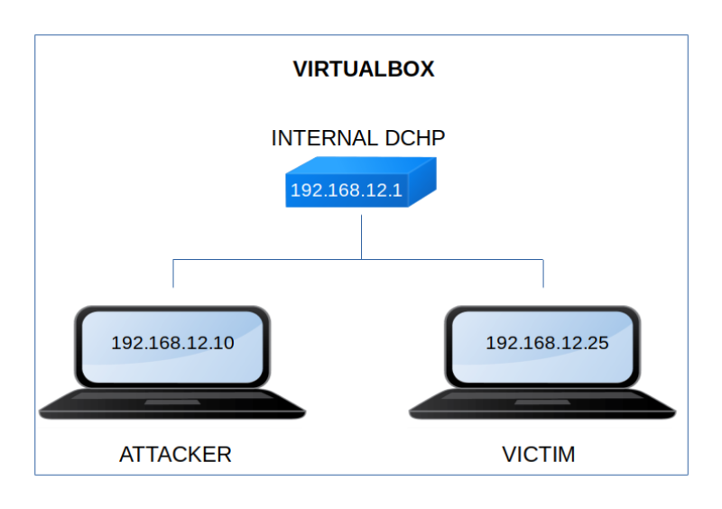

Grotesque 2
▸ Grotesque 2
▸ 1. Scan Network
▸ 2. Finding Services and Ports
▸ 3. Enumerate
▸ 3.1 Port fuzzing
▸ 3.2 Steganography
▸ 3.3 Decode the hash
▸ 3.4 Look for the right user
▸ 4. Explotiation
▸ 4.1 Login as "angel" (First flag)
▸ 4.2 pspy2 – Unprivileged Linux Process Snooping
▸ 5. Privilege Escalation
▸ 5.1 Getting the last flag
Difficulty: Medium.
Flag: 2 flags.
Learning:
• Reconnaissance
Scan Network
Find services
• Enumerate
Port fuzzing
Steganography
Decode hash
Look for the righy user with Hydra
• Exploitation
Login
Unprivileged Linux Process Snooping
• Privilege Escalation
Get root shell
• Download (Mirror): https://download.vulnhub.com/grotesque/grotesque2_vh.ova
• Download (Torrent): https://download.vulnhub.com/grotesque/grotesque2_vh.ova.torrent
Install the machine on VirtualBox:
1. Download the file.
2. On Virtualbox choose File->Import Appliance.
3. Select the file “ova”.
4. Accept to import.

Watch your Machine IP.
$ ifconfig
Output:

Diagram
